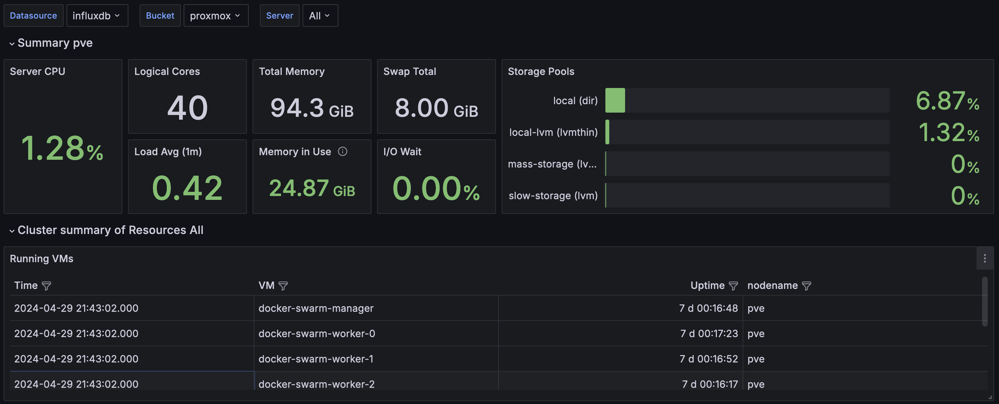

Technical Deep Dive
The first step in my automation project was to select a Linux distribution. Normally, I’d go with the reliable
Ubuntu Server LTS, but I wanted to challenge myself and explore new options. I decided on Alma Linux, which I
feel like is known for its reliability and enterprise capability, which seemed like a promising new environment
to learn. I created some custom shell scripts to not only clean up the base image but also populate each machine
with PEM keys for passwordless authentication — a big requirement for me and a critical step for enhancing
security.Additionally, I removed unnecessary components like Podman to streamline the system for my specific needs.
The result was a beautiful Proxmox template, ready to serve as the backbone for all my projects.
Additionally, I removed unnecessary components like Podman to streamline the system for my specific needs.
The result was a beautiful Proxmox template, ready to serve as the backbone for all my projects.
source "proxmox-iso" "alma_linux" {
proxmox_url = var.proxmox_api_url
username = var.proxmox_user
password = var.proxmox_password
node = var.proxmox_node
iso_file = var.proxmox_iso_file
ssh_username = var.ssh_username
ssh_password = var.ssh_password
ssh_timeout = var.ssh_timeout
vm_name = var.image_name
cpu_type = var.proxmox_cpu_type
memory = var.proxmox_memory
cores = var.proxmox_cores
vm_id = var.proxmox_vm_id
http_directory = "~/Documents/infra/packer/http"
boot_command = [
" inst.text inst.ks=http://{{ .HTTPIP }}:{{ .HTTPPort }}/ks.cfg"
]
}
Now that the Packer setup was complete, I moved on to what I consider my specialty: Terraforming. My primary
goal with Terraform was efficiency; I needed a tool that could manage the deployment of multiple virtual machines
with minimal coding. This led me directly to Terraform, which proved perfect for quickly setting up about seven
VMs for my homelab (more to come in the future)—1 Docker Swarm manager, 3 Docker Swarm workers, and 3 GitHub
Action Agents.
The main technical challenge was determining how to automatically generate an Ansible inventory file
(`machine_inventory.ini`) from Terraform outputs. Initially,
I considered directly writing the outputs to a file, but instead,
I wrote a super short and sweet custom shell script that would fetch the output from Terraform, process it,
and format it correctly for Ansible.
Below, you’ll find a snippet of the Terraform configuration for a Docker Swarm worker and the
Bash script that bridges Terraform outputs to an Ansible inventory:
resource "proxmox_vm_qemu" "docker-swarm-worker" {
agent = 1
boot = "order=scsi0;ide2;net0"
clone = var.alma_template
count = var.vm_worker_count
cores = var.docker_swarm_cores
cpu = "x86-64-v2-AES"
desc = "Worker nodes for the Docker Swarm cluster"
full_clone = false
kvm = true
memory = var.docker_swarm_memory
name = "docker-swarm-worker-${count.index}"
onboot = true
qemu_os = "other"
scsihw = "virtio-scsi-single"
sockets = var.docker_swarm_sockets
target_node = var.pve_node
vcpus = 0
vmid = 701 + count.index
}
#!/bin/bash
# Define the path to the Terraform directory
TERRAFORM_DIR="../terraform/" # Update this path as needed
# Navigate to the Terraform directory to ensure terraform commands work
cd "$TERRAFORM_DIR"
# Fetch outputs from Terraform
manager_name=$(terraform output -json manager_details | jq -r .name)
manager_ip=$(terraform output -json manager_details | jq -r .ip)
worker_details=$(terraform output -json worker_details)
agent_details=$(terraform output -json agent_details) # Fetch GitHub Action agent details
# Define the path to the inventory file
INVENTORY_DIR="../ansible/inventory" # This should be relative to the Terraform directory or absolute
INVENTORY_FILE="$INVENTORY_DIR/machines.ini"
# Check if the inventory directory exists, create if it doesn't
mkdir -p "$INVENTORY_DIR"
echo "[github-action-agents]" >> "$INVENTORY_FILE"
# Add GitHub Action agents to the inventory
echo "$agent_details" | jq -c '.[]' | while read -r line; do
agent_name=$(echo $line | jq -r .name)
agent_ip=$(echo $line | jq -r .ip)
echo "$agent_name ansible_host=$agent_ip" >> "$INVENTORY_FILE"
done
This approach not only streamlined the setup but also integrated seamlessly with Ansible, ensuring that all
components of my infrastructure were automatically up-to-date and correctly configured -- did I mention
that I love Terraform? This was probably the most fun I had with this project.
Next was Ansibilizing and preparing everything to either fit into the docker swarm, do one last round of
configuration, or deploy to a machine directly (i only had to do this with my reverse proxy because i
originally had it sit on the proxmox machine instead of having it sit on a virtual machine). This was
probably the funnest part of the adventure. I've recently been diving into Ansible a lot lately and want to
reach a high mastery level. The first part that I needed to overcome was how do i... overcome secrets
management? Do I stuff everything into Vault? Do I use Ansible vault? This is just my homelab so I could do
plaintext. For this I decided to use Ansible Vault and setup a private key that would unlock
all my secrets and make it easier for accessing the secrets. Seeing I populated each VM with an ansible user
and provided a PEM key I was able to quickly setup and get into each box quickly without any hassle.
I decided to go with a traditional directory setup for Ansible so I could easily traverse and start to put
things into logical areas, below is the directory layout that I decided to go with -- I am still unsure if I
will continue going this route but for now it works!
.
├── README.md
├── ansible.cfg
├── ansiblepass.yml
├── ansiblepassfile
├── files
├── group_vars
│ └── global_variables.yml
├── host_vars
├── inventory
│ └── machines.ini
├── playbooks
│ ├── caddy-deploy.yml
│ ├── docker-swarm-directories.yml
│ ├── docker-swarm.yml
│ ├── github-action-agents.yml
│ ├── grafana.yml
│ ├── hostname.yml
│ ├── influx-db.yml
│ ├── kernel-deploy.yml
│ ├── ozma-deploy.yml
│ ├── ping.yml
│ ├── uptime-akuma-deploy.yml
│ └── vault-deployment.yml
├── roles
├── scripts
└── templates
├── caddyfile.j2
├── telegraf.j2
├── template-kernel-env.j2
└── template-ozma-env.j2
9 directories, 22 files
After a little bit of configuration and setting up everything -- success! Everything was up and running
[WARNING]: Invalid characters were found in group names but not replaced, use -vvvv to see details
PLAY [Ping all hosts] **************************************************
TASK [Gathering Facts] *************************************************
ok: [docker-swarm-manager]
ok: [docker-swarm-worker-2]
ok: [proxmox]
ok: [docker-swarm-worker-1]
ok: [docker-swarm-worker-0]
ok: [github-action-agent-1]
ok: [github-action-agent-0]
ok: [github-action-agent-2]
TASK [Ping] ************************************************************
ok: [proxmox]
ok: [docker-swarm-manager]
ok: [docker-swarm-worker-2]
ok: [docker-swarm-worker-0]
ok: [docker-swarm-worker-1]
ok: [github-action-agent-0]
ok: [github-action-agent-1]
ok: [github-action-agent-2]
PLAY RECAP *************************************************************
docker-swarm-manager : ok=2 changed=0
docker-swarm-worker-0 : ok=2 changed=0
docker-swarm-worker-1 : ok=2 changed=0
docker-swarm-worker-2 : ok=2 changed=0
github-action-agent-0 : ok=2 changed=0
github-action-agent-1 : ok=2 changed=0
github-action-agent-2 : ok=2 changed=0
proxmox : ok=2 changed=0
With everything being setup and good to go -- the first thing I needed to figure out was how was I going to
deploy everything to docker swarm? Well bless the community because there was a
community.docker.docker_swarm_service module that I was able to use and quickly overcome having to manually deploy or extensible write.
Here is an example playbook that I wrote for deploying Grafana. I was able to quickly use the below to deploy
grafana, influx, github action agent setup (they're not on the swarm), and my multiple discord bots (one for
the devops community I run called Devops, Programming and Cloud.. Discord link is here
https://dpc.gg, if you
want to join we have a ton of great people)
---
- name: Deploy Grafana on Docker Swarm
hosts:
- docker-swarm-managers
- docker-swarm-workers
become: yes
vars_files:
- ./infra/ansible/pass.yml
tasks:
- name: Ensure application directories exist
file:
path: "{{ item }}"
state: directory
owner: root
group: root
mode: 0755
loop:
- /usr/src/app/grafana
- name: Create Grafana service on Swarm
community.docker.docker_swarm_service:
name: grafana
image: grafana/grafana:latest
user: 0
env:
GF_SECURITY_ADMIN_USER: "{{ grafana_admin_user }}"
GF_SECURITY_ADMIN_PASSWORD: "{{ grafana_admin_password }}"
publish:
- published_port: 4001
target_port: 3000
mounts:
- source: /usr/src/app/grafana
target: /var/lib/grafana
type: bind
replicas: 1
restart_config:
condition: any
delay: 5s
max_attempts: 3
window: 120s
state: present
Also, did I mention that I deployed some nice graphs to visualize my proxmox cluster? Eventually I want to add
some drilled down graphs of each node and services running, etc but my primary objective was to quickly get
everything up and running so.
